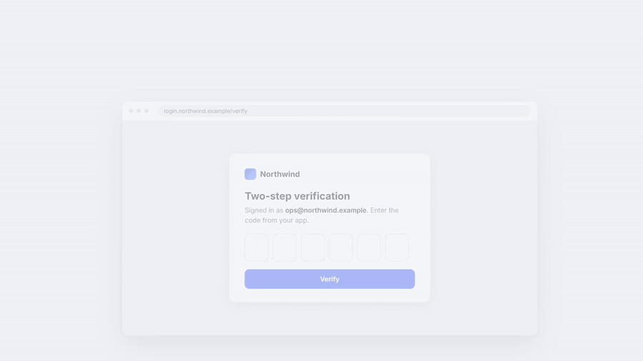
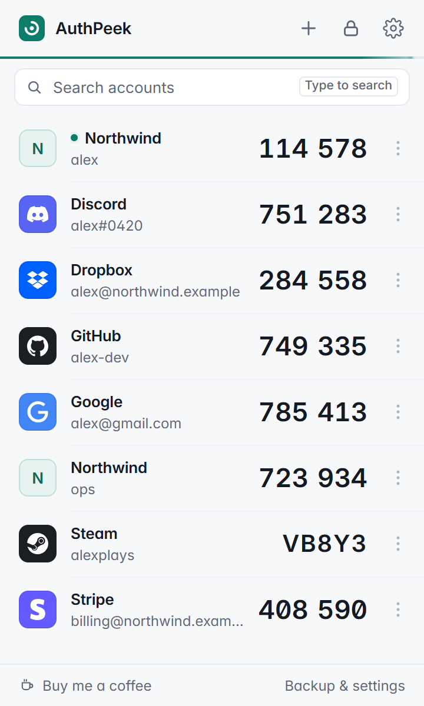
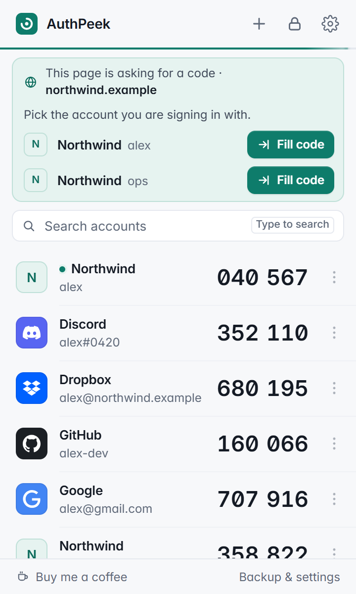
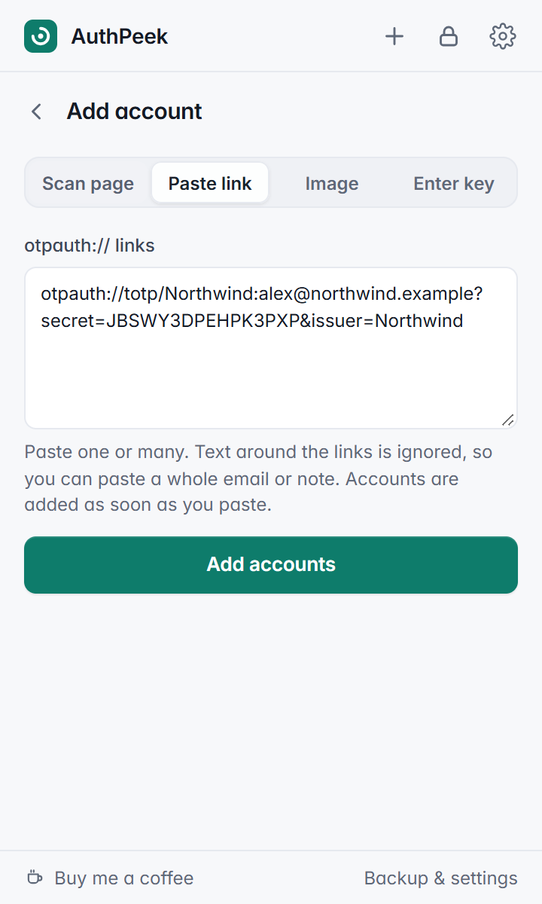
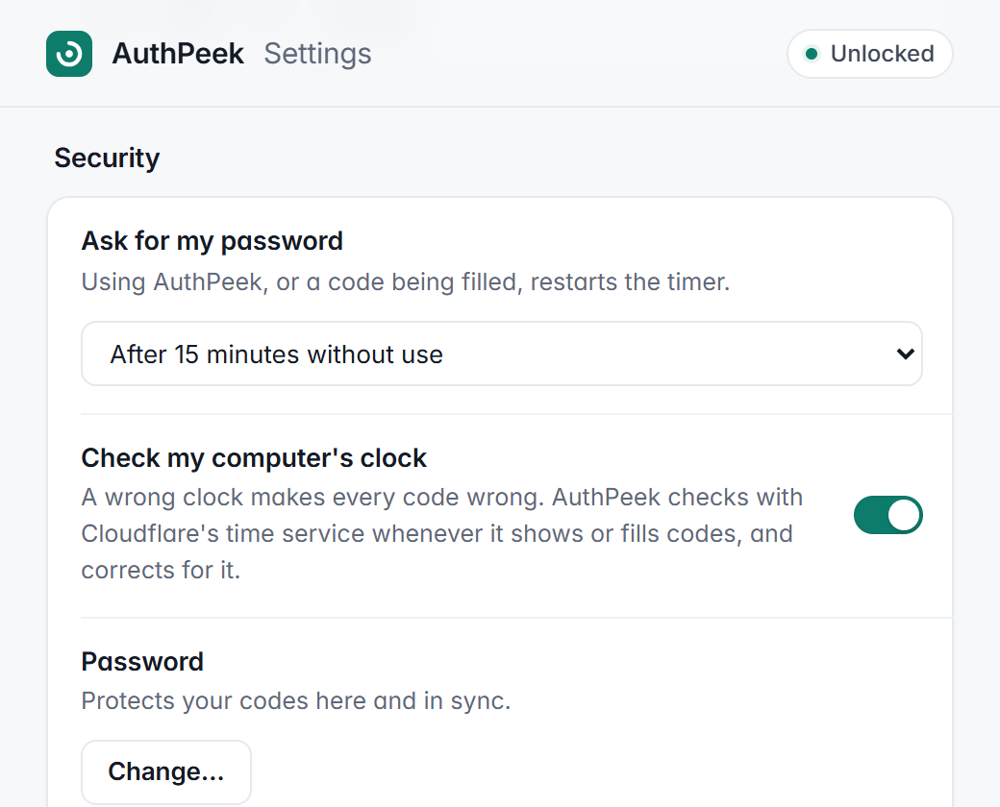

2-step verification codes in Chrome that fill themselves in.
An authenticator that lives in your browser: the same 6-digit codes as Google Authenticator™, filled into login pages for you. Encrypted with your password, synced with your Google account, no servers.

Why
Every 2-step login goes the same way: find your phone, unlock it, open the authenticator, scroll to the right account, read six digits, type them before the timer runs out. AuthPeek does that last part for you. You link an account to a site once, and from then on the code is in the box before you'd have found your phone.
What it does



otpauth:// links, upload a screenshot, or type the key. Google Authenticator's Transfer accounts QR codes bring everything over at once.
Also: share a code with someone as a link that works for a few minutes (encrypted, no server, your secret key never leaves the browser), move an account to your phone with a QR code, right-click any text box and choose AuthPeek to fill a code yourself, press Alt+Shift+O on a login page, Steam Guard codes, a clock check that fixes codes when your computer's clock is off, light and dark themes, and export to standard otpauth:// links whenever you want to move on.
Install
Chrome Web Store: in review; the link will be here once it's live.
From source, today:
- Download the repository and unzip it.
- Open
chrome://extensionsand switch on Developer mode (top right). - Click Load unpacked and choose the
extensionfolder. - Pin AuthPeek from the puzzle-piece menu, click it, and create your password.
Moving from Google Authenticator: in the app, choose Transfer accounts → Export, then in AuthPeek click + → Scan page (or upload a screenshot of the QR code).
How it keeps your codes safe
- Encrypted before it's saved. Each account is encrypted with AES-256-GCM using a key derived from your password (PBKDF2-SHA256, 600,000 rounds). Your password is never stored. Chrome sync carries only the encrypted data, so Google can't read it.
- No servers. Nothing is sent to the developer or anyone else. The one network request is an optional clock check against Cloudflare's public time service.
- No look-alike fills. A code is only filled on the exact site you linked (or its subdomains), so a phishing page at a similar address gets nothing.
- Open source. Everything above can be checked in the code.
Questions
Does it sync?
Yes. Accounts travel with your Google account through Chrome sync, so they appear in every Chrome you're signed in to. They are encrypted with your password before they leave the browser, and Google only ever stores the encrypted form.
Is it open source?
Yes, under the MIT licence. The whole extension is plain JavaScript with no build step, published at github.com/LazizjanAsatov/Authpeek; the folder you install is the folder in the repository.
Where are my secret keys stored?
In Chrome's own sync storage, encrypted with AES-256-GCM under a key derived from your password (PBKDF2-SHA256, 600,000 rounds). The password itself is never stored, and there is no AuthPeek server anywhere.
Do I need my phone?
No. The 6-digit TOTP codes (RFC 6238) are generated inside Chrome, so your phone can stay in your pocket. You can still keep the same accounts on a phone app too, by scanning the same setup QR code or by moving an account from AuthPeek with its QR code.
Can I import from Google Authenticator?
Yes. In Google Authenticator choose Transfer accounts → Export; AuthPeek reads the export QR codes from the screen or from a screenshot and adds every account at once. Single-account QR codes and otpauth:// links work too.
Can I share a code with someone?
Yes. Share makes a link that shows the account's codes for a few minutes (2, 5 or 10), after which it stops working. The codes are encrypted and carried in the link itself, nothing is sent to a server, and your secret key is never included, so the person can sign in once but can't generate codes later.
What does it cost?
Nothing. AuthPeek is free, with no ads, no tracking and no paid tier. If it saves you time, you can buy me a coffee.
How it compares
Checked against each vendor's own pages and store listings on 23 October 2026. Details change; follow the links in each product's name for the current facts.
| AuthPeek | Google Authenticator | Authenticator (authenticator.cc) | Bitwarden (extension) | |
|---|---|---|---|---|
| Runs in Chrome | Yes, as an extension | No; Android and iPhone/iPad apps | Yes (also Firefox and Edge) | Yes (and most other browsers) |
| Auto-fills the code into the page | Yes, automatically on linked sites | No Chrome version | Yes, with a keyboard command | Yes |
| Encrypted sync | Yes: encrypted with your password, carried by Chrome sync | Google Account sync; Google says encrypted in transit and at rest | Backups to Google Drive, OneDrive or Dropbox; password protection optional | Yes: encrypted on your device before it reaches Bitwarden's servers |
| Open source | Yes (MIT) | No; the archived code says the store app is proprietary | Yes (MIT) | Yes (GPL-3.0) |
| Price | Free | Free | Free | Vault free; generating 2FA codes needs Premium, $1.65/month billed yearly ($19.80) |
| Phone needed | No | Yes | No | No |